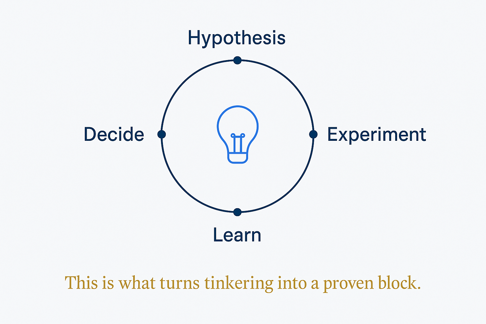

Play with a hypothesis: hypothesize → experiment → learn → decide. The mechanism that turns tinkering into a proven block.

The missing word between play and proof. Play is the posture — snap, try, rebuild, no stakes. But play alone doesn't prove anything; it just accumulates experiences. An experiment is play with a hypothesis attached: I think this block does X — then a small, fast test, an honest look at what happened, and a decision. Hypothesize → experiment → learn → decide. Same curiosity, plus a question it has to answer.
The loop is what makes personal play transferable to business. "I tinkered with this at home" is a hobby; "I hypothesized it would cut the filing decision to zero, ran it on my own vault for a month, and here's where it held and where it broke" is evidence. The difference isn't the activity — it's that a hypothesis was stated before the trying, so the outcome means something. A block is only proven when an experiment could have disproven it.
Your own life is the ideal laboratory precisely because failing is cheap and feedback is honest. A failed experiment at home costs an afternoon; the same lesson learned on a client's budget costs trust. And because the data is yours, you can't fool yourself about whether it worked — you know when the answer about your own life is wrong. Test fast, decide, move: the loop wants to be small and frequent, not grand and annual.
The decide step is the one people skip. An experiment that ends in "interesting!" and no decision is just play wearing a lab coat. Every loop closes with a verdict — adopt the block, drop it, or sharpen the hypothesis and run again — and the verdict is what feeds the bridge: only blocks that survived a real experiment earn the trip from personal play to business application.